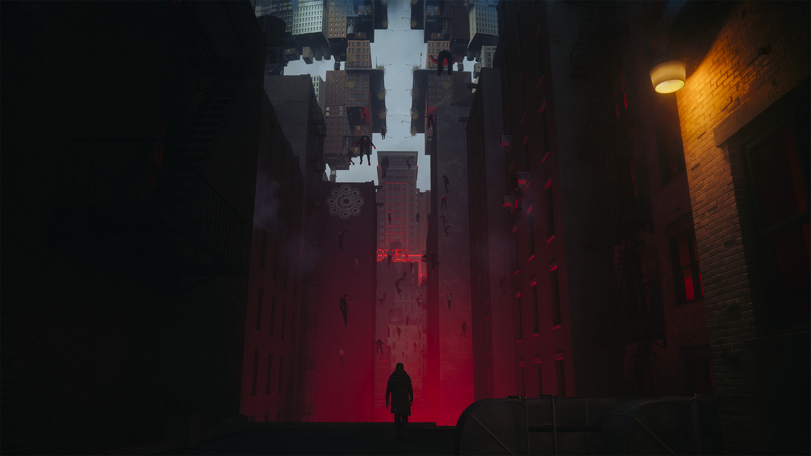
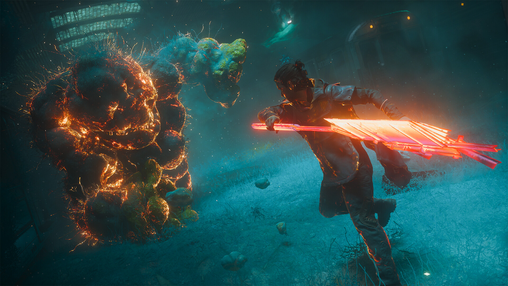
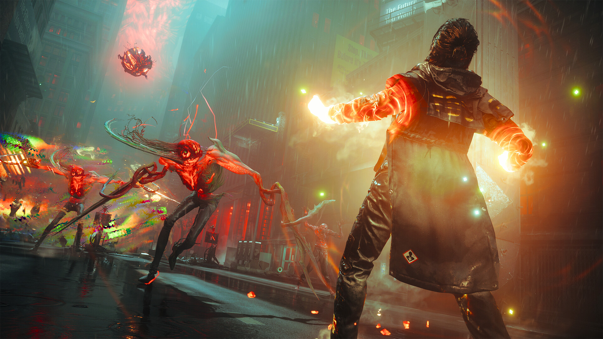

컨트롤 레조넌트 출시일 PC사양 정리, 사전예약 스팀 위시리스트까지
여러분, 요즘 '컨트롤 레조넌트 출시일이 대체 언제냐'는 질문을 부쩍 많이 받고 있어요. 오늘이 9월 17일 목요일이니까 딱 D-7 남은 셈인데, 정작 이런 신작 소식에서 제일 많이들 궁금해하시는 건 스토리 얘기가 아니라 '내 컴퓨터로 돌아가긴 하는 거냐'는 현실적인 질문이더라고요. 그래서 오늘은 출시일이랑 플랫폼부터, 다들 궁금해하실 PC 사양, 그리고 사전예약은 지금 어디서 챙길 수 있는지까지 한 번에 정리해볼게요.

리메디 엔터테인먼트의 신작 '컨트롤 레조넌트' 공식 키아트예요, 뒤로 보이는 붉은 균열이 이 게임 분위기를 딱 보여주네요.
이미지: 스팀 스토어 페이지
컨트롤 레조넌트, 정확히 언제 나오는 거예요?
컨트롤 레조넌트는 2026년 9월 24일(목) PS5·PC(스팀)·엑스박스 시리즈 X|S로 전 세계 동시 출시돼요. 개발은 리메디 엔터테인먼트가 맡았고요, 딱 한 곳 뉴질랜드만 시차 때문에 하루 늦은 9월 25일로 잡혀 있다고 해요. 우리나라 기준으로는 그냥 9월 24일 목요일, 오늘(9월 17일 목요일)부터 세면 정확히 일주일 남은 거죠. 세 플랫폼 다 같은 날짜로 맞춰져 있어서 어느 쪽으로 시작하든 출시일 걱정은 안 하셔도 될 것 같아요.
장르랑 배경 세계관은 어떤 느낌이에요?
컨트롤 레조넌트는 초자연적인 힘으로 뒤틀린 맨해튼을 무대로 하는 액션 게임이에요. 전작보다 액션 RPG 색이 좀 더 짙어졌다는 얘기도 나오고 있는데, 이 부분은 아직 제가 직접 확인한 정보는 아니라 담백하게만 짚고 넘어갈게요.
주인공은 전작에서 조연으로 나왔던 딜런 페이든이고요, 형태가 자유자재로 바뀌는 무기 '변종'을 손에 들고 싸운다고 해요. 전작 주인공이었던 제시 페이든과는 남매 사이라 이번 작 스토리에서도 큰 축이 될 것 같고요. 다만 새로 나온다는 근접무기·전투 시스템의 정확한 명칭은 아직 확인이 안 돼서, 이 부분은 나중에 더 나오면 채워드릴게요.

건물이 통째로 뒤집혀 있는 이 골목이 '뒤틀린 맨해튼'을 제일 잘 보여주는 장면 같아요, 보고 있으면 살짝 소름 돋더라고요.
이미지: 스팀 스토어 페이지
다들 제일 궁금해하실 PC 사양, 최소·권장 정리해볼게요
최소 사양은 라이젠5 3500·지포스 GTX 1070급, 권장 사양은 라이젠7 3700X·RTX 3060 Ti급이면 무난해요. 사양표는 사람마다 옮겨 적을 때 값이 조금씩 달라지는 경우가 많아서, 저도 오늘(9월 17일) 발행 직전에 스팀 상점 페이지를 직접 열어서 최소·권장 값을 그대로 옮겨왔어요.
| 구분 | 운영체제 | CPU | 메모리 | 그래픽카드 | 저장공간 |
|---|---|---|---|---|---|
| 최소 | Windows 10/11(64비트) | i5-8500 / 라이젠5 3500 | 16GB | GTX 1070 / RX 5600 XT / Arc A580 | 120GB(SSD 필수) |
| 권장 | Windows 10/11(64비트) | i7-10700 / 라이젠7 3700X | 16GB | RTX 3060 Ti / RX 6700 XT / Arc B580 | 120GB(SSD 필수) |
최소·권장 둘 다 램은 16GB로 같은데, 그래픽카드만 한 단계 확 뛰는 구조라 그래픽카드가 발목 잡을 확률이 제일 높아요. 혹시 내 컴퓨터가 표 어디쯤 있는지 감이 안 잡히시면, CPU·그래픽카드 이름을 그대로 검색만 해봐도 표보다 위인지 아래인지 금방 나오니까 그 방법을 추천드려요. 저장공간은 최소·권장 둘 다 120GB인데 SSD가 필수라고 못 박혀 있으니, 여유 공간이 하드디스크뿐이라면 SSD 용량부터 한 번 확인해보시는 게 좋을 것 같아요. 콘솔(PS5·엑스박스 시리즈 X|S)은 사양 고민 없이 그대로 즐기면 되니 이 부분은 신경 안 쓰셔도 돼요.
사전예약, 지금 어디서 어떻게 하나요?
PS 스토어는 사전예약이 6월 3일부터 이미 진행 중이고, 스팀도 위시리스트·예약구매 페이지가 열려 있어서 지금 바로 챙기실 수 있어요. 6월 3일 플레이스테이션 공식 블로그에서 "오늘부터 예약 주문 가능합니다"라고 밝히면서 사전예약이 시작됐고요, PC판도 스팀 상점 페이지에 들어가 보면 위시리스트·예약구매 버튼이 그대로 떠 있어요.
실제로 오늘 제가 들어가봤을 때도 '약 7일 후 잠금 해제'라는 카운트다운이 뜨고 있더라고요, 딱 출시일(9월 24일)에 맞춘 숫자죠. 다만 정확한 사전예약 마감 시각까지 콕 집어 공지된 건 아니라서, 출시일인 24일 전까지는 계속 열려 있다고 보시면 될 것 같아요.

저 빛나는 무기가 그 형태 변하는 '변종'인 것 같은데, 전투 연출이 꽤 화려해서 사전예약 눌러두고 싶어지더라고요.
이미지: 스팀 스토어 페이지
사전예약 보상은 나왔어요?
네, 사전구매 특전이 스팀·플레이스테이션·엑스박스 스토어에 각각 올라와 있는데, 스토어마다 포함된 아이템이 조금씩 달라요. 사실 이 글을 처음 준비할 때는 공식 발표가 따로 없었는데, 오늘 다시 확인해보니 사전구매 특전이 그새 올라와 있더라고요. 다만 국문 정식 명칭이 따로 나온 건 아니라서 영문 표기 그대로 적어둘게요.
| 구분 | 포함 내용 |
|---|---|
| PC(스팀) 사전구매 | Hiss Corruption 아웃핏 · Pickpocket's Tool 아티팩트 |
| PS5(PS스토어) 사전구매 | 위 2종 + Occult 아웃핏 |
| 엑스박스 사전구매 | 사전구매 보너스 포함(세부 아이템명 비공개) |
| PS5 디지털 디럭스 추가분 | 디지털 아트북 · 오리지널 사운드트랙 · 시작 자원 번들 · Untapped 아티팩트(지갑) · AWE 미션 아웃핏 + 출시 48시간 전(9월 22일)부터 조기 플레이 |
혹시 아직 뭘 챙겨야 할지 감이 안 잡히신다면, 스토어 알림 켜두기랑 위시리스트·예약주문 버튼 미리 눌러두는 것부터 해두시면 좋아요. 출시일 당일 오픈런하실 분들은 위에서 정리한 PC 사양도 미리 한 번 대조해두시는 걸 추천드려요.
확장된 어시스트 모드, 이번에 새로 생긴 게 많아요
9월 14일 플레이스테이션 공식 블로그에서 어시스트 모드가 훨씬 세분화됐다고 발표했어요. 프리셋으로 난이도를 고르는 게 아니라 전투 요소 하나하나를 직접 조정하는 방식인데, 항목을 나열해보면 이래요.
- 전투 난이도 — 적 공격성 낮추기 · 완벽 회피 시간 늘리기 · 적 투사체 속도 늦추기
- 받는 피해량 · 주는 피해량 · 비틀거림 피해를 각각 따로 조정
- 능력(초자연 능력) 회복 속도 조정
- 근접 공격 유도 강화 — 적한테 더 잘 붙게
- 스토리 전용 옵션 — 무적 · 일격 처치 · 일격 비틀거림
여기서 포인트는 난이도를 낮추는 옵션만 있는 게 아니라 올리는 쪽으로도 조정할 수 있다는 건데요, 액션 게임에 익숙한 분이라면 오히려 더 빡세게 세팅해서 즐기실 수도 있는 셈이죠.

이런 다인원 전투 상황에서 적 공격성이나 회피 타이밍을 직접 조정할 수 있다는 거니까, 손이 서투른 분들한텐 꽤 반가운 소식이에요.
이미지: 스팀 스토어 페이지
확정된 것 vs 아직 안 풀린 것, 한눈에 정리
여기까지 나온 얘기, 확정된 것과 아직 안 나온 것으로 한번 나눠서 정리해볼게요.
| 지금 확정된 것 | 아직 안 풀린 것 |
|---|---|
| 출시일 9/24(뉴질랜드만 9/25) · 3개 플랫폼 · PC 사양 · 사전예약(PS스토어 6/3~·스팀 위시리스트) · 사전구매 특전 · 확장 어시스트 모드 | 신규 근접무기·전투 시스템 정확한 명칭 · 사전예약 정확한 마감 시각 |
이 두 가지는 확정되면 그때 다시 정리해서 알려드릴게요.
자주 묻는 질문
Q. 컨트롤 레조넌트, 한국에서도 9월 24일에 똑같이 나오나요?
네, PS5·스팀·엑스박스 시리즈 X|S 전부 9월 24일 전 세계 동시 출시라 한국도 같은 날짜예요. 예외는 뉴질랜드 한 곳뿐이고 그마저 하루(9/25) 차이라 국내 기준으로는 신경 쓰실 부분이 없어요.
Q. PC 사양이 표보다 낮으면 아예 실행이 안 되나요?
최소 사양은 어디까지나 '이 정도는 되어야 무난하게 돌아간다'는 기준값이라, 표보다 낮다고 무조건 실행이 안 된다고 단정하긴 어려워요. 다만 그래픽카드가 표보다 많이 아래라면 프레임이 많이 떨어질 수 있으니, 출시 전에 내 부품 이름으로 한 번 검색해보시는 걸 추천드려요.
Q. PS5 디지털 디럭스 에디션 사면 뭐가 제일 좋아요?
가장 눈에 띄는 건 출시 48시간 전인 9월 22일부터 먼저 플레이할 수 있다는 점이에요. 특전 아이템도 스탠다드판보다 더 많고요.
Q. 신규 근접무기 이름이 뭔가요?
아직 확인이 안 돼요. 트레일러나 공식 소개에서 정확한 명칭이 따로 나오면 그때 이 글에 추가로 정리할게요.
컨트롤 레조넌트 정리
정리하면, 컨트롤 레조넌트는 9월 24일(목) PS5·PC(스팀)·엑스박스 시리즈 X|S로 전 세계 동시 출시고요, PC 사양은 최소 GTX 1070급·권장 RTX 3060 Ti급으로 보시면 됩니다. 사전예약은 지금 바로 PS 스토어·스팀에서 챙길 수 있고 사전구매 특전도 이미 나와 있으니, 오픈런 준비하실 분들은 아래 스토어 페이지부터 미리 눌러두시면 좋을 것 같아요.
스토어 바로가기
· 스팀(PC) · PS 스토어 · Xbox 스토어
참고한 곳
· 플레이스테이션 공식 블로그 — 출시일·사전예약(6/3)
· 플레이스테이션 공식 블로그 — 확장된 어시스트 모드(9/14)
· 컨트롤 레조넌트 스팀 스토어 페이지